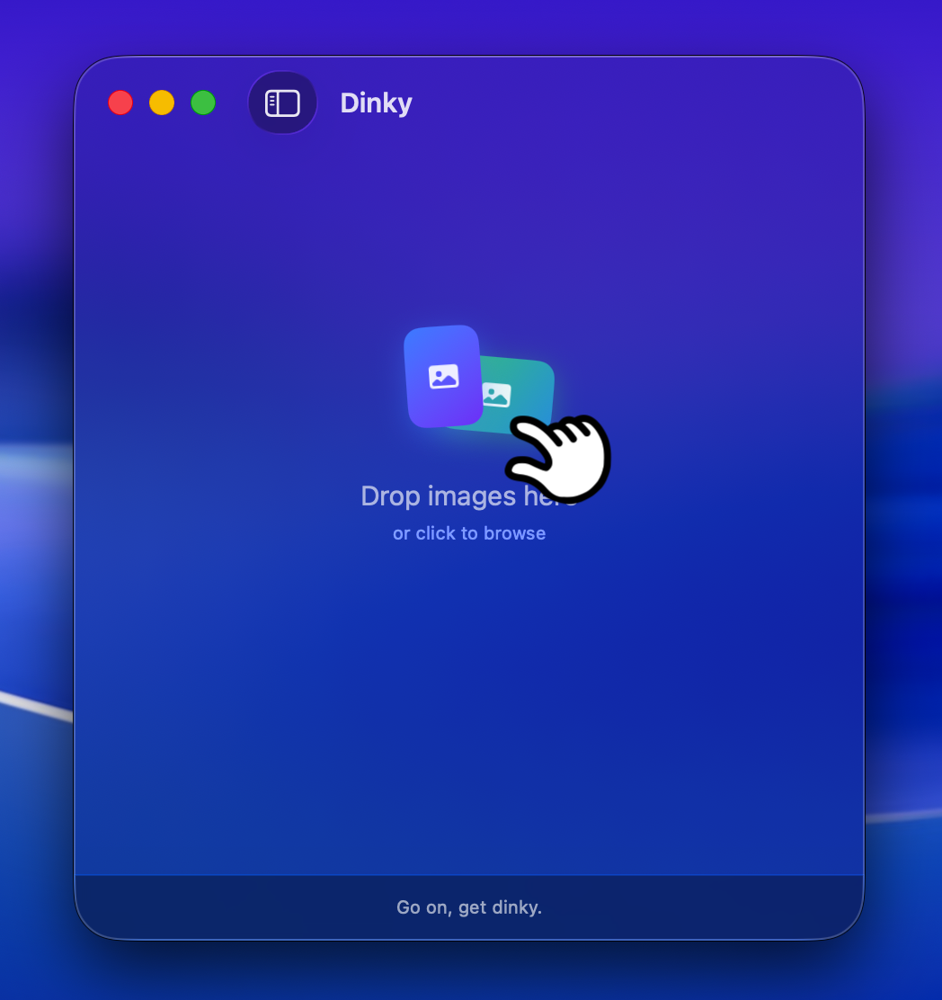
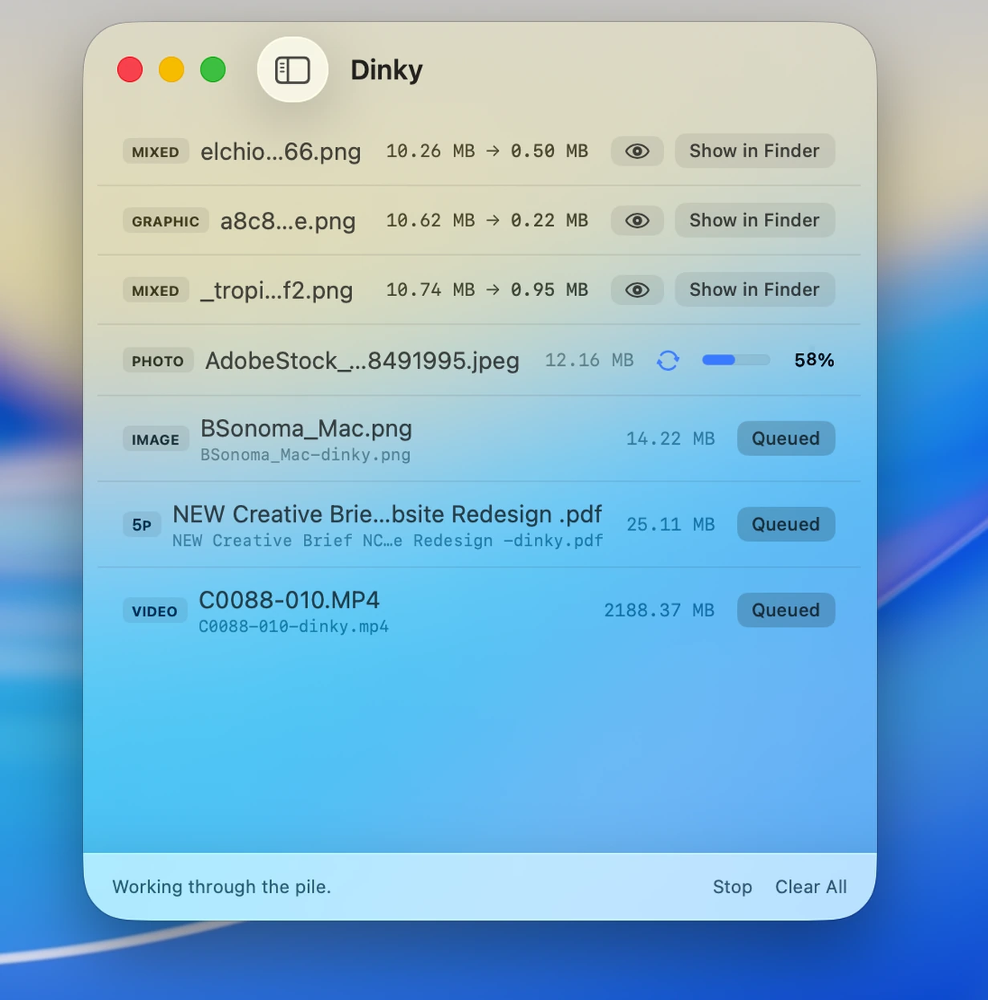
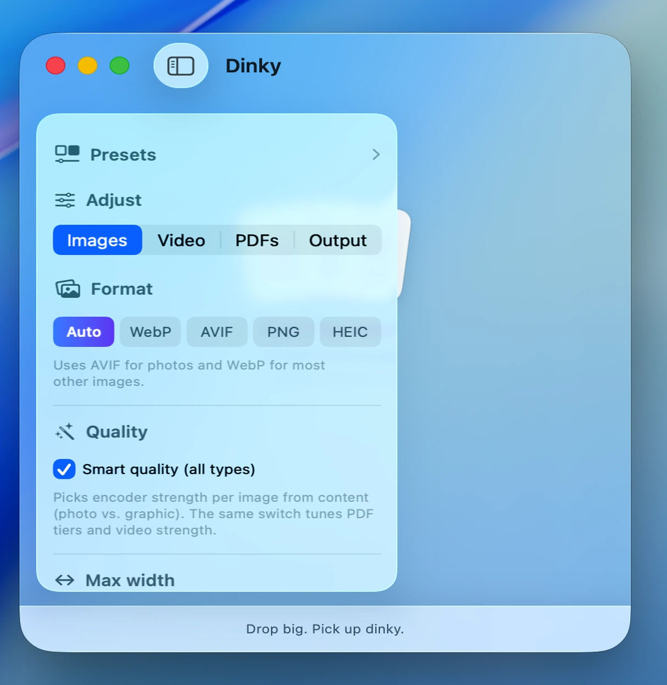

Dinky
Making images smaller.
A tiny macOS app that converts JPGs and PNGs into WebP, AVIF, or lossless PNG. Drag and drop, get smaller files back. Free and open source.
~12 MB · v1.4.1 · Requires macOS 15 Sequoia
Making images smaller.
A tiny macOS app that converts JPGs and PNGs into WebP, AVIF, or lossless PNG. Drag and drop, get smaller files back. Free and open source.
~12 MB · v1.4.1 · Requires macOS 15 Sequoia






Drop images on the window, paste from clipboard, or use the file picker.
Output to WebP, AVIF, or lossless PNG. That's where the real savings live.
Multiple files compress concurrently with live results as they finish.
Resize on the way out with common web presets or a custom value.
Binary-searches the quality level to hit an exact KB or MB target.
Save your favorite settings as a named preset and apply them in one click.
Side-by-side or slider view to compare original and compressed before you keep it.
Drop images onto a compact popover from the menu bar without opening the main window.
Compress straight from Finder's right-click menu, no app launch needed.
Point Dinky at a folder and new images dropped in are compressed automatically.
Detects photo vs. screenshot per image and picks quality accordingly. Text stays crisp.
Save next to the original, pick a custom folder, or trash originals after.
Run oxipng on PNGs when you need to keep transparency or format fidelity.
Scrubs EXIF, GPS, and camera data on the way out. Smaller files, nothing personal left behind.
Fast runs one at a time. Fastest uses every core, no waiting.
Checks for new releases on launch. One click installs and relaunches — no browser, no re-drag.
JPG, PNG, WebP, AVIF, TIFF, and BMP. Output is WebP, AVIF, or lossless PNG — your pick in the sidebar.
Yes. Free to download, free to use, open source on GitHub under MIT. No trial, no watermarks, no "pro" tier.
Nope. Everything runs locally on your Mac. Your images never leave your machine — no servers, no accounts, no uploads.
ImageOptim keeps your files in the same format — it squeezes a JPEG and hands it back as a JPEG. Dinky converts to WebP or AVIF, which is where the real savings are: typically 30–80% smaller than a JPEG at the same visual quality. If you need lossless PNG, Dinky runs oxipng — same idea as ImageOptim, but as one option inside a broader tool.
TinyPNG uploads your images to their servers to compress them. Squoosh is a browser tool — great, but one image at a time with no batch support. Dinky is local, runs natively on your Mac, and handles as many files as you can throw at it concurrently.
Optimage is the closest comparison — it does lossy conversion and costs $15. Dinky is free, open source, and ~12 MB versus Optimage's 62 MB. Optimage has more format output options; Dinky focuses on WebP, AVIF, and lossless PNG — the three formats that matter most for the web.
Dinky requires macOS 15 Sequoia or later. On macOS 26 Tahoe you get the full liquid glass UI; on Sequoia it falls back to the frosted material look. Either way, everything works.
Not yet — App Store distribution requires sandboxing that would limit how Dinky shells out to its compression engines. Direct download keeps things simple and free. The notarization warning on first launch is a one-time thing; after that it opens normally.
Yes — Dinky is Mac-only. It's built in SwiftUI with AppKit, uses macOS-native compression tools, and leans on OS frameworks like Vision and Core Graphics that don't exist elsewhere. A Windows or Linux port would essentially be a different app. The Mac is where the work happens anyway.
Presets let you save a named collection of settings — format, quality, max width, destination, filename handling, and more — and apply them all in one click from the sidebar. Create and manage them in Settings → Presets. When a preset is active, the sidebar shows a summary of exactly what it controls so nothing is a surprise.
Yes. Turn on Menu bar mode in Settings → General and a Dinky icon appears in your menu bar. Click it to get a compact drop zone — drag images onto it and they compress in the background without ever opening the main window.
Yes, with Watch Folder. In Settings → Output, enable Auto-watch folder and pick a directory. Any image saved or moved into that folder is picked up and compressed automatically — useful for export folders from Figma, Lightroom, or a screenshot utility.
Dinky was built by Derek Castelli, a full-time freelance web designer working in Webflow and Figma. Image compression comes up on every site build — optimizing photos for fast load times is constant work, and doing it by hand in a browser or through a bloated app gets old fast. Optimage crashed one day and instead of finding a replacement, it seemed like a good excuse to build something. This was his first macOS app.